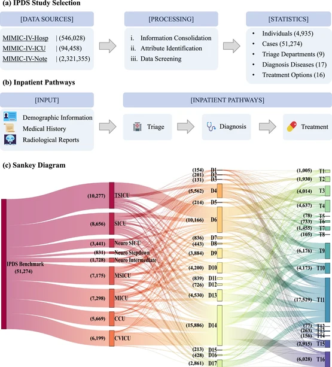
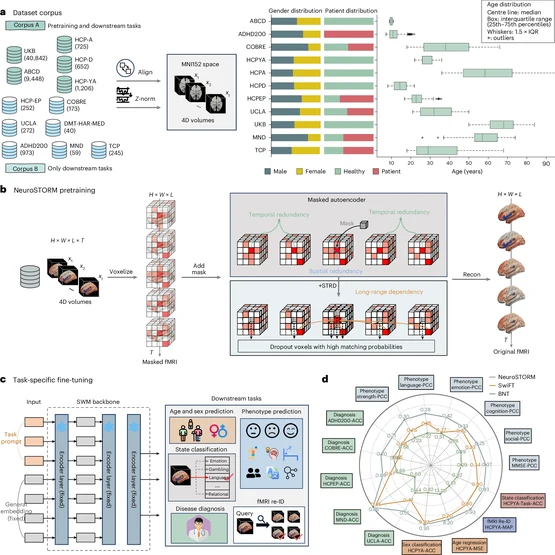

Zhihao Peng (彭志浩)
Postdoc Fellow |
 |


I obtained a Ph.D. degree in the Department of Computer Science, City University of Hong Kong (CityU) advised by Prof. HOU Junhui. The qualifying panel members are Prof. WONG Hau San and Prof. CHAN Antoni Bert.
I am an Innovation and Technology Fund (ITF)-funded Postdoctoral Fellow in electrical engineering at the Chinese University of Hong Kong. My research focuses on representation and graph learning, neuroimaging AI and foundation models, and medical AI with multi-agent decision-making. I develop methods for learning from complex data, understanding brain imaging, and supporting clinical reasoning through multimodal models and collaborative agents.
Research Scope
-
Representation & Graph Learning
Self-supervised Representation Learning ([AGCN, ACM MM’21], [DAGC, IEEE TCSVT’22]); Graph Structure Learning & Deep Clustering ([AASSC-Net, IEEE TIP’22], [EGRC-Net, IEEE TIP’23]); Transfer Learning & Domain Adaptation ([Active Transfer Learning, IEEE TCSVT’19], [Non-Negative Transfer Learning, IEEE SPL’20])
-
Neuroimaging AI & Foundation Models
Brain Connectome Learning & Clinical Prediction ([GBT, MICCAI’24], [SW-HGL, MICCAI’24]); Multimodal Brain Representation Learning ([F2TNet, MICCAI’24], [fTSPL, MICCAI’24]); Brain Foundation Models ([NeuroSTORM, Nature Biomedical Engineering’26])
-
Medical AI & Multi-Agent Decision-Making
Multimodal Medical Understanding & Benchmarking ([EndoBench, NeurIPS’25], [OmniBrainBench, CVPR’26]); Clinical Reasoning & Inpatient Pathways ([MAP, npj Health Systems’26]); Adaptive Multi-Agent Collaboration ([MAC, arXiv’25], [Expertise-aware Multi-LLM, arXiv’25])
Preprints
| Unveiling and Bridging the Functional Perception Gap in MLLMs: Atomic Visual Alignment and Hierarchical Evaluation via PET-Bench Zanting Ye, Xiaolong Niu, Xuanbin Wu, Xu Han, Shengyuan Liu, Jing Hao, Zhihao Peng, Hao Sun, Jieqin Lv, Fanghu Wang, Yanchao Huang, Hubing Wu, Yixuan Yuan, Habib Zaidi, Arman Rahmim, Yefeng Zheng, Lijun Lu arXiv ( arXiv:2601.02737), 2026 |
| MAC: Masked Agent Collaboration Boosts Large Language Model Medical Decision-Making Zhihao Peng, Liuxin Bao, and Yixuan Yuan. arXiv (arXiv:2507.21159), 2025 |
| Expertise-aware Multi-LLM Recruitment and Collaboration for Medical Decision-Making Liuxin Bao, Zhihao Peng, Xiaofei Zhou, Runmin Cong, Jiyong Zhang, and Yixuan Yuan. arXiv ( arXiv:2508.13754), 2025 |
Selected Publications

|
OmniBrainBench: A Comprehensive Multimodal Benchmark for Brain Imaging Analysis Across Multi-stage Clinical Tasks Zhihao Peng, Cheng Wang, Shengyuan Liu, Zhiying Liang, Zanting Ye, Min Jie Ju, Peter YM Woo, and Yixuan Yuan. Computer Vision and Pattern Recognition Conference ( CVPR'26), 2026 |
|
 |
Map: Evaluation and multi-agent enhancement of large language models for inpatient pathways Zhen Chen, Zhihao Peng, Xusheng Liang, Cheng Wang, Peigan Liang, Linsheng Zeng, Minjie Ju, and Yixuan Yuan. npj Health Systems, 2026 |
|
 |
Towards a general-purpose foundation model for functional MRI analysis Cheng Wang, Yu Jiang, Zhihao Peng, Chenxin Li, Changbae Bang, Lin Zhao, Jinglei Lv, Jorge Sepulcre, Carl Yang, Lifang He, Tianming Liu, Daniel Barron, Quanzheng Li, Randy Hirschtick, Byung-Hoon Kim, Xiang Li, and Yixuan Yuan. Nature Biomedical Engineering (Nature-BME), 2026 |

|
A Comprehensive Evaluation of Multi-Modal Large Language Models for Endoscopy Analysis Shengyuan Liu, Boyun Zheng, Wenting Chen, Zhihao Peng, Zhenfei Yin, Jing Shao, Jiancong Hu, and Yixuan Yuan. Conference on Neural Information Processing Systems (NeurIPS’25 D&B), 2025 |

|
GBT: Geometric-oriented Brain Transformer for Autism Diagnosis Zhihao Peng, Zhibin He, Yu Jiang, Pengyu Wang, and Yixuan Yuan. International Conference on Medical Image Computing and Computer Assisted Intervention (MICCAI), 2024 |

|
Hierarchical Graph Learning with Small-World Brain Connectomes for Cognitive Prediction Yu Jiang, Zhibin He, Zhihao Peng, and Yixuan Yuan. International Conference on Medical Image Computing and Computer Assisted Intervention (MICCAI), 2024 |

|
F2TNet: FMRI to T1w MRI Knowledge Transfer Network for Brain Multi-phenotype Prediction Zhibin He, Wuyang Li, Yu Jiang, Zhihao Peng, Pengyu Wang, Xiang Li, Tianming Liu, Junwei Han, Tuo Zhang, and Yixuan Yuan. International Conference on Medical Image Computing and Computer Assisted Intervention (MICCAI), 2024 |

|
fTSPL: Enhancing Brain Analysis with fMRI-Text Synergistic Prompt Learning Pengyu Wang, Huaqi Zhang, Zhibin He, Zhihao Peng, and Yixuan Yuan. International Conference on Medical Image Computing and Computer Assisted Intervention (MICCAI), 2024 |

|
EGRC-Net: Embedding-induced Graph Refinement Clustering Network Zhihao Peng, Hui Liu, Yuheng Jia, and Junhui Hou. IEEE Transactions on Image Processing (TIP), 2023 |

|
Deep Attention-guided Graph Clustering with Dual Self-supervision Zhihao Peng, Hui Liu, Yuheng Jia, and Junhui Hou. IEEE Transactions on Circuits and Systems for Video Technology (TCSVT), 2022 |

|
Adaptive Attribute and Structure Subspace Clustering Network Zhihao Peng, Hui Liu, Yuheng Jia, and Junhui Hou. IEEE Transactions on Image Processing (TIP), 2022 |

|
Attention-driven Graph Clustering Network Zhihao Peng, Hui Liu, Yuheng Jia, and Junhui Hou. |

|
Maximum Entropy Subspace Clustering Network Zhihao Peng, Yuheng Jia, Hui Liu, Junhui Hou, and Qingfu Zhang. IEEE Transactions on Circuits and Systems for Video Technology (TCSVT), 2021 |

|
Non-Negative Transfer Learning With Consistent Inter-Domain Distribution Zhihao Peng, Yuheng Jia, and Junhui Hou. |

|
Active Transfer Learning Zhihao Peng, Wei Zhang, Na Han, Xiaozhao Fang, Peipei Kang, and Luyao Teng. IEEE Transactions on Circuits and Systems for Video Technology (TCSVT), 2019 |
Patents


|
"Pedestrian re-identification method, device, and readable storage medium" 一种行人重识别方法、装置及可读存储介质 Zhihao Peng, First student inventor China Invention Patent (Granted) CN109492610B [ link] 

|


|
"Method and device for removing the mask from phase spectrum" 一种相位谱去除掩膜的方法与装置 Zhihao Peng, First inventor China Invention Patent (Granted) CN107424616B [link] 

|
Awards & Experience
Awards
Experience
|
Teaching
CS2115, Computer Organization, TA
CS2116, Computer Systems, TA
CS4182, Computer Graphics, TA
CS5182, Computer Graphics, TA
Academic Service
|
Conference Organizer
NeurIPS Workshop on Artificial Intelligence in Medicine Foundation Models |
Conference Reviewer
|
Journal Reviewer
|